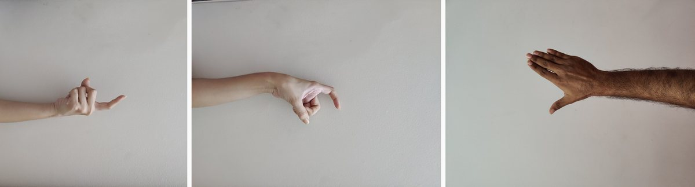

Real-Time Sign Detection
A webcam classifier for hand signs, and why its weakest part is not the model
An early university project from 2021. The training and inference scaffolding started from a DataFlair tutorial; what I added was the dataset and the analysis of where the approach breaks. I have not re-run it recently, so no accuracy figures are quoted here.
The task
Recognise a hand sign from a webcam and print the corresponding word, live, on a laptop with no GPU. Ten classes, the numbers one through ten.
Framed that way it sounds like an image classification problem, and the classifier turns out to be the easy half. Almost all of the difficulty is upstream, in deciding which pixels are the hand.
Getting the hand out of the frame
There is no hand detector anywhere in this system. Instead it builds a model of the background and treats whatever appears on top of it as the hand.
For the first sixty frames the program does nothing but accumulate a running average of a fixed region of the frame, with a weight of 0.5, producing a float image of the empty scene. After that, each new frame is subtracted from that background, the absolute difference is thresholded at 25, and the largest external contour in the resulting binary mask is taken to be the hand. The mask, not the photograph, is what the network sees.
That choice has a real advantage. A binary silhouette discards skin tone, lighting and clothing entirely, so a model trained on one person's hands transfers to another's more readily than a model trained on RGB crops would. It is also why a small network is sufficient.
It also has an obvious failure mode, which is that the assumption is false the moment anything else moves. The background must be genuinely empty during those first sixty frames, the camera cannot be bumped, and the lighting cannot change. The hand must also stay inside a fixed rectangle in the frame, because the region of interest is hardcoded rather than tracked.
The dataset

The capture script writes 300 thresholded images per class straight from the webcam, so collecting a class is a matter of holding a sign steady for a few seconds while the counter climbs.
Two people contributed, which matters more than the raw count. A single-signer dataset teaches the network one person's hand geometry, and it will fail on anyone else. Two is not enough to fix that, but it is enough to notice it happening.
The model
Three convolutional blocks with 32, 64 and 128 filters, each followed by 2x2 max pooling, then a flatten and three dense layers of 64, 128 and 128 units into a ten-way softmax. Input is 64x64. Training used a batch size of 10 for ten epochs, with learning-rate reduction on plateau and early stopping on validation loss.
Two things about that setup are worth flagging rather than hiding.
The model is compiled twice in the training script, once with Adam and again with SGD, and only the second compile takes effect. So despite appearances the network trained with SGD at a learning rate of 0.001. That is a real bug in the sense that the code does not do what it reads as doing.
The images are also passed through VGG16 preprocessing and expanded to three channels, even though they are binary masks with no colour information at all. It is harmless and it is wasteful, and it is the sort of thing that survives in a pipeline because it does not break anything.
What I would do differently
Replace background subtraction with hand landmark detection. A keypoint model gives 21 joint positions regardless of what else is moving, removes the fixed region of interest, removes the calibration period, and survives a moving camera. Classifying from normalised joint coordinates rather than pixels would also shrink the model substantially.
Beyond that: many more signers, since two is a demonstration and not a dataset; per-class accuracy rather than a single number, because confusable pairs are where a sign classifier actually fails; and temporal smoothing over consecutive frames, since a live system that flickers between two predictions is unusable even when it is right most of the time.
The lesson I took from it is one that kept applying afterwards. The neural network was the part everyone asked about and the part that took the least effort. Deciding what to feed it was the project.